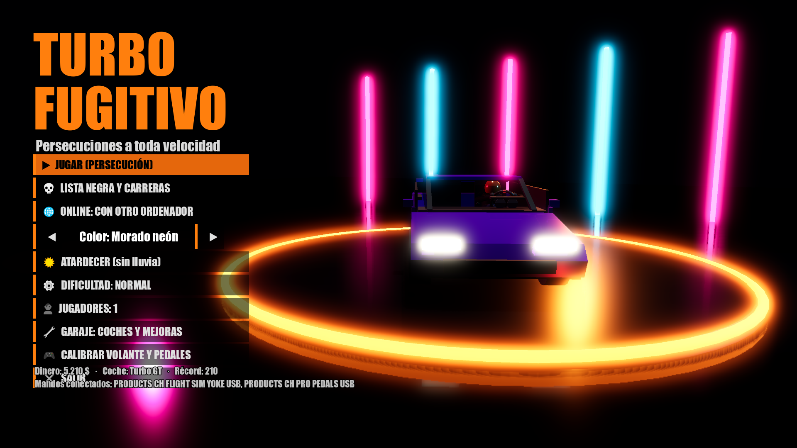
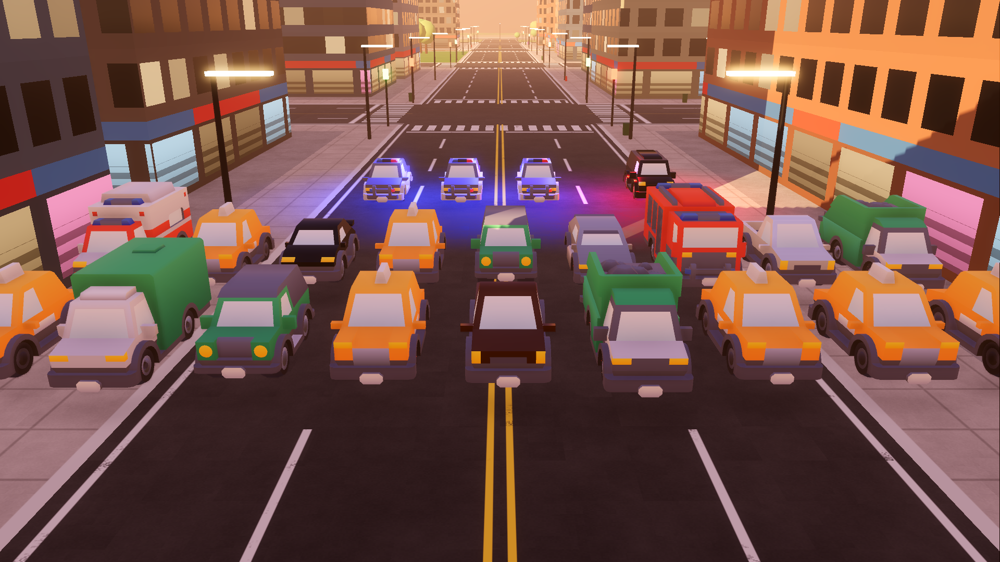
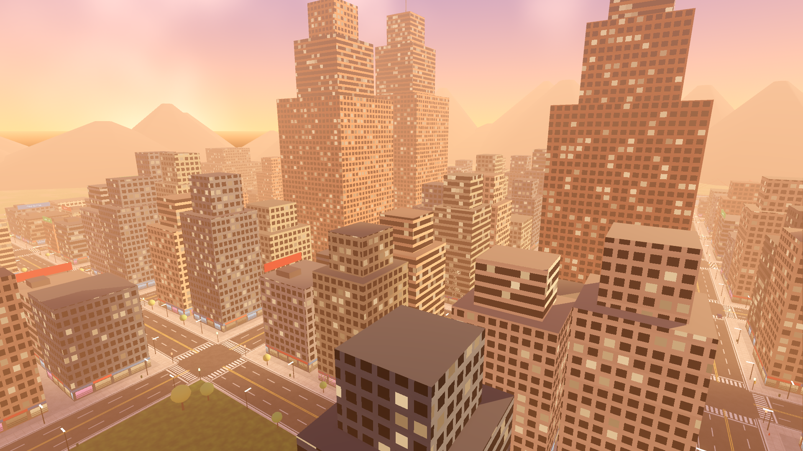
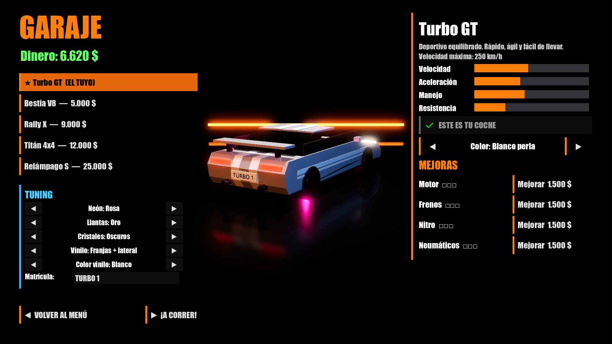

Qué hay
- Persecuciones con 5 niveles de calor: controles, pinchos, furgones, helicóptero y radio de la policía.
- Lista Negra: 5 rivales. Gánales una carrera y te quedas su coche.
- Modo Poli: tú llevas el coche patrulla y detienes fugitivos.
- Garaje: 5 coches, mejoras y tuning (neón, llantas, vinilos, matrícula).
- Ciudad viva: autopista, túnel, puente, tráfico, semáforos, peatones, noche con lluvia.
- Retos con premios, y choques con abolladuras y cámara lenta.
- Multijugador: pantalla partida u online entre dos ordenadores (Windows y Mac).
- Se juega con teclado (WASD o flechas), mando de consola o volante y pedales.
La versión del navegador es de prueba: va algo menos fluida y con gráficos más sencillos. Para jugar mejor (y para el online), usa la descarga.
Jugar online
En el menú, ONLINE: CON OTRO ORDENADOR. Uno pulsa CREAR PARTIDA y le sale un código de 4 letras; el otro lo escribe y pulsa UNIRSE.
Instalar
Windows: descarga el ZIP, descomprímelo y abre TurboFugitivo.exe. Si Windows avisa de "aplicación desconocida", pulsa Más información → Ejecutar de todas formas.
Mac: descarga el ZIP y ábrelo. La primera vez, haz clic derecho sobre "Turbo Fugitivo" → Abrir y confirma (el juego no está firmado por Apple). Si aun así no deja, en Ajustes del Sistema → Privacidad y seguridad pulsa Abrir igualmente.